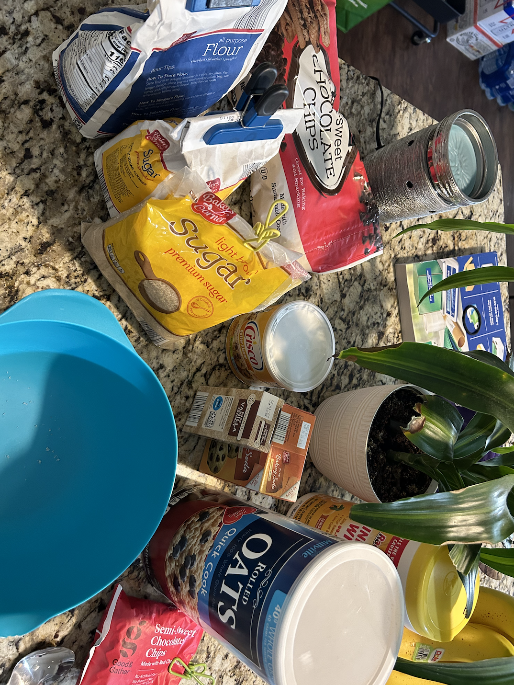

How to make the BEST oatmeal chocolate chip cookies
Step 1: Get ingredients together
These are the best ingredients to make oatmeal chocolate chip cookies. Instead of butter I use butter flavored crisco to make them more fluffy.
Step 2: Put ingredients in bowl
For this step I usually put all ingredients in the bowl besides flour, otmeal, and chocolate chips and then mix. I do not separate my dry from wet ingredients because it will all be mixed together in the end.

Step 3: Mix ingredients together
After mixing all of the other ingredients, I add my flour, oatmeal, and chocolate chips. Do NOT forget to add the flour because I have made that mistake in the past. Your batter mixture should look like this picture.

Step 4: Make cookie dough balls
Whenever I make this cookie dough recipe, I only make a few cookies at a time. I only want to eat warm cookies fresh out of the oven, so I ball the rest of the dough and put it in the freezer for safe keeping.

Step 5: Take cookies out of the oven
This photo shows what the perfect cookie looks like. They should be golden brown on the outside but gooey in the middle. I always make sure not to overbake my cookies, because who wants a dry cookie?

Step 6: Enjoy!
This is a photo of my roomate enjoying her first bite of a cookie. She always asks for me to make them for her, so she is super excited I made them for her!